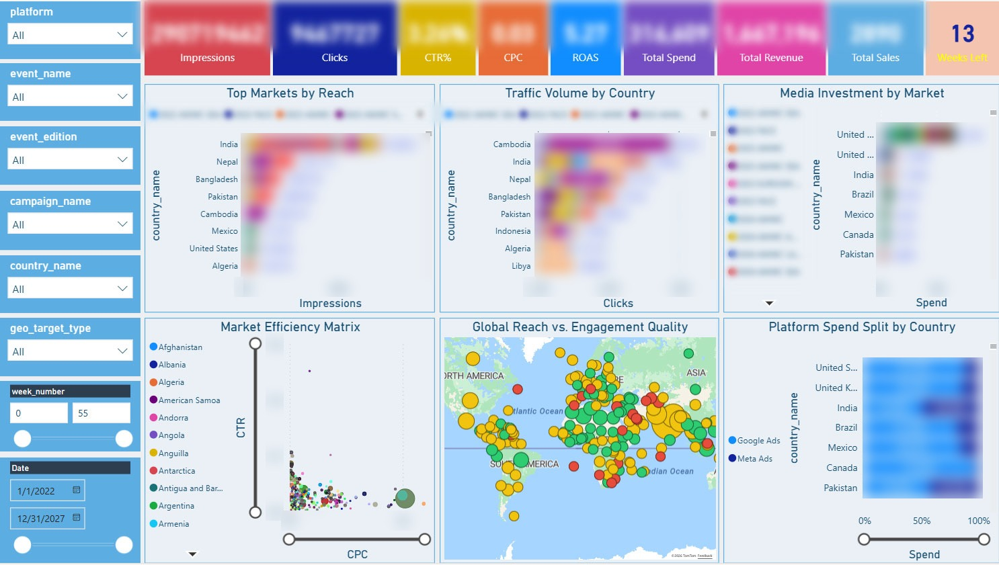

Interactive architecture
Click any component to see the engineering decision behind it, and jump straight to its code.
Key engineering decisions
These are the choices that make the platform reliable, cheap to run, observable and safe to change.
Idempotent loads
Each load deletes the target date/account slice before inserting it. Any DAG can be re-run or backfilled without creating duplicates.
Rolling lookback windows
Ad platforms restate results days after the click. Every run re-pulls the last 14 days for delivery metrics and 30 days for sales, conversions and leads, so late attribution is captured automatically.
Views in Silver, tables in Gold
Silver is materialized='view': always fresh, zero storage. Gold is materialized='table', partitioned and clustered, so Power BI never waits on heavy joins.
Partitioning & clustering
Every table is partitioned by DATE and clustered by the columns analysts filter on, such as campaign and ad group. Queries scan only what they need, so cost and latency stay flat as history grows.
Atomic transformation DAGs
Silver, Gold and dbt test run as one DAG per mart. If Silver fails, Gold never runs on stale data, so dashboards can't show silent failures.
Slim CI in development
A Jinja macro (target.name == 'dev') limits dev runs to 14 days, cutting BigQuery dev compute by more than 90%. Prod processes full history.
Separated Dev and Prod
Separate repositories, Airflow stacks and datasets. Changes are validated in Dev, then promoted via Git to an always-on Prod host.
Observability
A severity-based log sink and email alerts on failure, with per-source recovery and traceability. Configurable lookback windows make any source replayable after an incident.
What the business sees
One page of the Ads Command Center in Power BI, built on the Gold layer through the Fabric semantic model.

- Which markets drive reach and traffic?Impressions and clicks by country
- Where is the budget going?Media investment and Google vs Meta spend split by market
- Where is engagement strongest?CTR vs CPC efficiency matrix and global reach map
- Filter by what mattersPlatform, event, edition, campaign, country, geo target, week and date